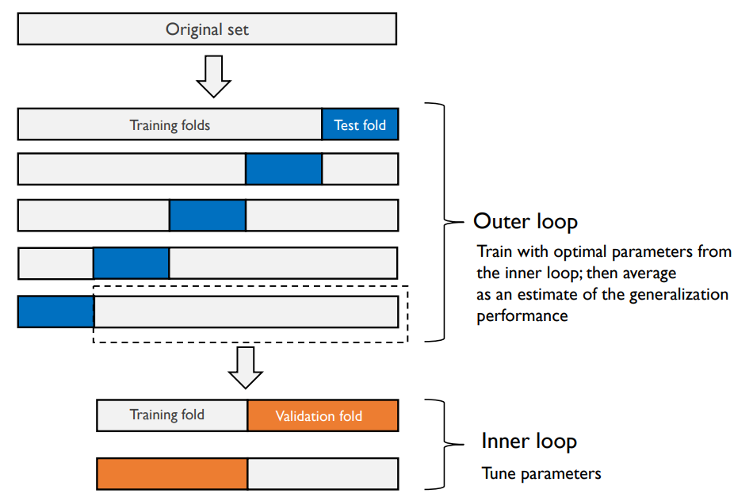
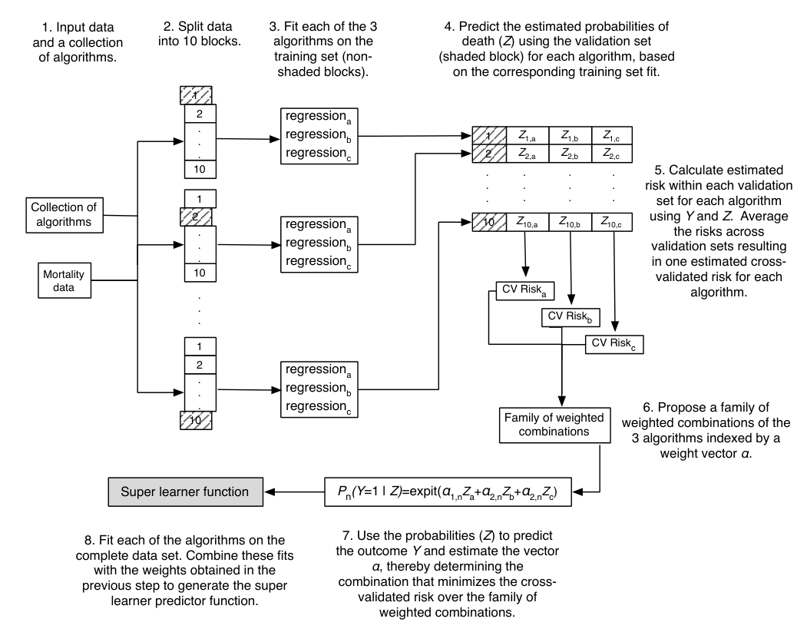

Super Learning
ü¶∏ü¶∏ü¶∏ | 2025-03-10 | Targeted Learning
Setup
Data \(O = (W, A, Y) \sim P_{0}\); observe \(n\) i.i.d. observations \(O_{1}, \ldots, O_{n}\)
Target parameter is the causal risk difference under causal assumptions: \[\begin{align*} \Psi(P_{0}) & = E_{W, 0}\left[ E_{0}(Y \mid A = 1, W) - E_{0}(Y \mid A = 0, W) \right] \\ & = \int_{\mathcal{W}} \left\{ \bar{Q}_{0}(1, w) - \bar{Q}_{0}(0, w) \right\} Q_{W, 0}(dw) \\ & = \Psi(Q_{0}) \end{align*}\] where \[\begin{align} \bar{Q}_{0}(A, W) := E_{0}(Y \mid A, W), \end{align}\] \(Q_{W, 0}\) is the marginal distribution of \(W\) under \(Q_{0}\) and \(Q_{0} = (\bar{Q}_{0}, Q_{W, 0})\).
Target parameter \(\Psi(P_{0})\) only depends on \(P_{0}\) through conditional mean \(\bar{Q}_{0}(A, W)\) and marginal distribution \(Q_{W, 0}\).
Target parameter and algorithm
Empirical measure \(Q_{W, n}\) estimates marginal distribution \(Q_{W, 0}\) (“nonparametric maximum likelihood estimator”); focus on estimator \(\bar{Q}_{n}\) of \(\bar{Q}_{0}\)
Plug \(Q_{n} = (\bar{Q}_{n}, Q_{W, n})\) into \(\Psi(\cdot)\) (“non-targeted substitution estimator”) \[\begin{align} \psi_{n} = \Psi(Q_{n}) = \frac{1}{n} \sum_{i=1}^{n} \{\bar{Q}_{n}(1, W_{i}) - \bar{Q}_{n}(0, W_{i})\} \end{align}\]
Want an automated algorithm to nonparametrically (or semiparametrically) estimate \(\bar{Q}_{0}(A, W)\)
An algorithm is an estimator of \(\bar{Q}_{0}\) that maps a data set \(\{(W_{i}, A_{i}, Y_{i})\}_{i=1}^{n}\) into a prediction function that can be used to map input \((A, W)\) into a predicted value \(Y\)
Want to find best algorithm to estimate the function \[\begin{align*} \bar{Q}_{0} : (A, W) \to \bar{Q}_{0}(A, W) \end{align*}\]
Best algorithm
Can define “best” in terms of a loss function, which assigns a measure of performance to a candidate function \(\bar{Q}\) when applied to an observation \(O\), i.e. \[\begin{align*} L : (O, \bar{Q}) \to L(O, \bar{Q}) \in \mathbb{R}. \end{align*}\] It is a function of the random variable \(O\) and parameter value \(\bar{Q}\).
E.g. squared error or negative log loss \[\begin{align*} L(O, \bar{Q}) & = [Y - \bar{Q}(A, W)]^{2} \\ L(O, \bar{Q}) & = - \log [ \bar{Q}(A, W)^{Y} \left\{ 1 - \bar{Q}(A, W) \right\}^{1 - Y} ] \end{align*}\]
For binary \(Y\), both the squared error and negative log loss target the same function, namely \(\bar{Q}_{0}(A, W) = E_{0}(Y \mid A, W) = P_{0}(Y = 1 \mid A, W)\)
Loss function and risk
A loss function defines a function \(\bar{Q}_{0}\) that has the optimal performance with respect to that loss function among all candidate functions \(\bar{Q}\)
We can define our parameter of interest, \(\bar{Q}_{0}(A, W) = E_{0}(Y \mid A, W)\), as the minimizer of the expected squared error loss: \[\begin{align} \bar{Q}_{0} = \underset{\bar{Q}}{\arg\min} \ E_{0} L(O, \bar{Q}) = \underset{\bar{Q}}{\arg\min} \ E_{0} [Y - \bar{Q}(A, W)]^{2} \end{align}\]
The expected loss \(R(\bar{Q}) := E_{0} L(O, \bar{Q})\) is denoted the risk
- It evaluates the candidates \(\bar{Q}\) and is minimized by the optimal choice \(\bar{Q}_{0}\)
- We want the risk to be as small as possible.
“Best” algorithm: want the estimator of the regression function \(\bar{Q}_{0}\) whose realized value minimizes the expectation of the squared error loss function.
Finding the best algorithm
- The following is just paraphrasing these great slides by Eric Polley
- For candidates \(\bar{Q}_{n}^{k}\), \(k = 1, \ldots, K\), we prefer the estimator for which the risk \[\begin{align} R(\bar{Q}^{k}_{n}) = E_{0} L(O, \bar{Q}^{k}_{n}) = \int L(O, \bar{Q}^{k}_{n}) dP_{0} \end{align}\] is the smallest (depends on unobserved true \(P_{0}\))
- Empirical risk estimate: \[\begin{align*} R_{n}(\bar{Q}_{n}) := P_{n} L(O, \bar{Q}_{n}) = \int L(O, \bar{Q}_{n}) dP_{n} = \frac{1}{n} \sum_{i=1}^{n} L(O_{i}, \bar{Q}_{n}) \end{align*}\]
- Problem: \(\bar{Q}_{n}\) was fit using the same data as to estimate its risk. Need external data to evaluate estimators.
- Use cross-validation to estimate risk of estimator. Data divided into \(V\) sets of size \(\sim \frac{n}{V}\)
Cross-validation
For e.g. \(V = 10\) we have training and validation samples \((\mathcal{T}_{1}, \mathcal{V}_{1}), \ldots, (\mathcal{T}_{10}, \mathcal{V}_{10})\) where \(\mathcal{T}_{i}\) and \(\mathcal{V}_{i}\) of size \(n_{t}\) and \(n_{v}\), respectively
Fit learner on training sample \(\mathcal{T}_{j}\), denote resulting learner by \(\bar{Q}_{n, j}\), and compute its risk on corresponding validation sample \(\mathcal{V}_{j}\); denote the risk estimate by \[\begin{equation} R_{n, j}(\bar{Q}_{n, j}) = \frac{1}{n_{v}} \sum_{i \in \mathcal{V}_{j}} L(O_{i}, \bar{Q}_{n, j}) = \frac{1}{n_{v}} \sum_{i \in \mathcal{V}_{j}} \{Y_{i} - \bar{Q}_{n, j}(A_{i}, W_{i})\}^{2} \end{equation}\]
The cross-validated risk (CV risk) is the average risk over the folds \[\begin{align*} R_{\mathrm{CV}, n}(\bar{Q}_{n}) := \frac{1}{V} \sum_{v = 1}^{V} R_{n, v}(\bar{Q}_{n, v}) \end{align*}\]
CV risk provides a close approximation of the true risk of an estimator
Data splits
Figure from Eric Polley’s slides.
Discrete Super Learner
- Choose the estimator with the lowest estimated cross-validated risk
- Have \(K\) estimators \(\bar{Q}_{n}^{k}\), \(k = 1, \ldots, K\), each with their CV risk estimate \(R_{\mathrm{CV}, n}(\bar{Q}^{k}_{n})\)
- Let \[\begin{align*} k_{n}^{\mathrm{cv}} := \underset{k}{\arg\min} \ R_{\mathrm{CV}, n}(\bar{Q}^{k}_{n}) \end{align*}\]
be the index of the estimator with the smallest CV risk.
- The corresponding estimator \(\bar{Q}^{k_{n}^{\mathrm{cv}}}_{n}\) is the discrete super learner
Oracle Selector
- The best among all candidate estimators is the oracle selector \[\begin{align*} k_{n}^{\mathrm{or}} := \underset{k}{\arg\min} \ \frac{1}{V} \sum_{v = 1}^{V} R(\bar{Q}^{k}_{n, v}), \end{align*}\]
which depends on the true risk \(R(\cdot)\) and is therefore unknown in practice
It serves as a benchmark; can compare performance of \(\bar{Q}^{k_{n}^{\mathrm{cv}}}_{n, v}\) to \(\bar{Q}^{k_{n}^{\mathrm{or}}}_{n, v}\)
van der Vaart, Dudoit & van der Laan (2006) shows an oracle inequality saying that the discrete super learner is essentially as close to the truth as the oracle, and the number of algorithms \(K\) is allowed to be very large
- We can include any model choice in our ensemble of algorithms
- Oracle inequality ensures that super learner chooses the correct one
Super Learner
- The Discrete super learner \(\bar{Q}^{k_{n}^{\mathrm{cv}}}_{n, v}\) is the best candidate estimator measured by the CV risk. Howeover, maybe different estimator capture different features of the data.
- Can gain from taking linear combination of candidate estimators instead of picking just one (model stacking)
- Convex combination of candidate estimators \(\bar{Q}_{n}^{1}, \ldots, \bar{Q}_{n}^{K}\): \[\begin{align*} \bar{Q}_{n}^{\omega} := \sum_{k = 1}^{K} \omega_{k} \bar{Q}_{n}^{k}, \quad \text{with } \omega_{k} \geq 0 \text{ and } \sum_{k = 1}^{K} \omega_{k} = 1. \end{align*}\]
- Can find a combination that minimizes cross-validated risk \[\begin{align*} \omega^{\mathrm{cv}}_{n} := \underset{\omega}{\arg\min} \ \frac{1}{V} \sum_{v=1}^{V} R_{n}(\bar{Q}_{n, v}^{\omega}) \end{align*}\]
Super Learner
The estimator corresponding to the convex combination \(\omega^{\mathrm{cv}}_{n}\) of estimators is \(\bar{Q}_{n}^{\omega^{\mathrm{cv}}_{n}} = \sum_{k = 1}^{K} \omega^{\mathrm{cv}}_{n, k} \bar{Q}_{n}^{k}\).
The resulting estimator is the super learner
We used cross-validation to find the best convex combination of candidate estimators; how to estimate the risk of the super learner?
Can also estimate the risk of the super learner using cross-validation.
- First fit super learner in training sample (using nested cross-validation), then evaluate risk in validation sample. Repeat \(V\) times.
- In R: function
CV.SuperLearnersplits the data into \(V\) folds and then callsSuperLearneron each fold
Nested cross-validation
Figure from Raschka 2018.
Steps in Super Learning
- 0: Choose a library of candidate algorithms
- 1: Split data into \(V\) folds
- 2: Estimate each algorithm’s CV risk
- The estimator with the lowest CV risk is the discrete super learner
- Can stop here and use the discrete super learner (function) as our estimate of \(\bar{Q}_{0}\)
- Estimate convex combination of candidate estimators
- The estimated convex combination is the super learner
- Use the super learner (function) as our estimate of \(\bar{Q}_{0}\)
- Can also estimate the risk of the super learner using nested cross-validation
Discrete Super Learner
Super Learner
Simulation example
- Simulate from \(4\) functions with noise added:
\[\begin{align*} Y &= -2 \cdot \mathbf{1}(X < -3) + 2.55 \cdot \mathbf{1}(X > -2) - 2 \cdot \mathbf{1}(X > 0) \\ & + 4 \cdot \mathbf{1}(X > 2) - 1 \cdot \mathbf{1}(X > 3) +u \\ Y &= 6 + 0.4X - 0.36X^2 + 0.005X^3 + u \\ Y &= 2.83 \sin\left(\frac{\pi}{2} X\right) +u \\ Y &= 4 \sin(3\pi X) \cdot \mathbf{1}(X > 0) + u \end{align*}\] where \(u \sim N(0, 1)\) and \(X \sim \mathrm{Unif}(-4, 4)\)
- Optimal \(R^{2}\) equal to \(R^{2}_{opt} = 1 - \frac{1}{\mathrm{Var}(Y)}\); \(\mathrm{Var}(Y)\) chosen such that \(R^{2}_{opt} = 0.8\)
Simulation example

Simulation example
- Construct ensemble of algorithms
gam_learners <- create.Learner(
"SL.gam", tune = list(deg.gam = c(2, 3, 4))
)
bag_learners <- create.Learner(
"SL.ipredbagg", tune = list(cp = c(0.0, 0.1, 0.01))
)
nn_learners <- create.Learner(
"SL.nnet", tune = list(size = c(2, 3, 4, 5))
)
loess_learners <- create.Learner(
"SL.loess", tune = list(span = c(0.75, 0.5, 0.25, 0.1))
)
all_learners <- c(
gam_learners$names,
nn_learners$names,
bag_learners$names,
loess_learners$names,
"SL.randomForest",
"SL.xgboost",
"SL.glm",
"SL.polymars"
)Simulation example
- Estimate Super Learner
Super Learner fit

Weights of the Super Learner
| Super Learner weights from plot | ||||
|---|---|---|---|---|
| Algorithm | Sim 1 | Sim 2 | Sim 3 | Sim 4 |
| SL.glm | 0.0 | 0.0 | 0.0 | 0.0 |
| SL.randomForest | 0.0 | 0.0 | 0.0 | 0.864 |
| SL.xgboost | 0.322 | 0.0 | 0.0 | 0.136 |
| SL.ipredbagg(0.00) | 0.0 | 0.015 | 0.212 | 0.0 |
| SL.ipredbagg(0.1) | 0.0 | 0.0 | 0.158 | 0.0 |
| SL.ipredbagg(0.01) | 0.0 | 0.0 | 0.0 | 0.0 |
| SL.gam(2) | 0.0 | 0.0 | 0.0 | 0.0 |
| SL.gam(3) | 0.0 | 0.0 | 0.0 | 0.0 |
| SL.gam(4) | 0.0 | 0.0 | 0.0 | 0.0 |
| SL.nnet(2) | 0.0 | 0.102 | 0.0 | 0.0 |
| SL.nnet(3) | 0.0 | 0.231 | 0.061 | 0.0 |
| SL.nnet(4) | 0.381 | 0.0 | 0.07 | 0.0 |
| SL.nnet(5) | 0.206 | 0.0 | 0.064 | 0.0 |
| SL.polymars | 0.091 | 0.0 | 0.0 | 0.0 |
| SL.loess(0.75) | 0.0 | 0.247 | 0.0 | 0.0 |
| SL.loess(0.5) | 0.0 | 0.406 | 0.255 | 0.0 |
| SL.loess(0.25) | 0.0 | 0.0 | 0.179 | 0.0 |
| SL.loess(0.1) | 0.0 | 0.0 | 0.0 | 0.0 |
How well does the Super Learner do?
- Estimate Super Learner on each outcome for a single simulated dataset
- Simulate 100 new datasets and compute \(R^2 = 1 - \frac{\sum_{i} (Y_{i} - Y_{i, n})^{2}}{\sum_{i} (Y_{i} -
\bar{Y})^{2}}\), where \(Y_{i,n}\) algorithm prediction and \(\bar{Y}\) empirical mean, for:
- Super Learner
- Discrete Super Learner
- Each individual algorithm
- Theoretical optimal \(R^2\) is \(0.8\)
- Compare the performance of the Super Learner to the individual algorithms
- Results are shown in table on next slide
Table 3.2 van der Laan and Rose
| Simulation results for N = 100 simulations | ||||||||
|---|---|---|---|---|---|---|---|---|
| Algorithm | Sim 1 | Sim 2 | Sim 3 | Sim 4 | ||||
| R² | SE(R²) | R² | SE(R²) | R² | SE(R²) | R² | SE(R²) | |
| Super Learner | 0.746 | 0.004 | 0.782 | 0.004 | 0.734 | 0.005 | 0.477 | 0.005 |
| Discrete SL | 0.755 | 0.004 | 0.78 | 0.004 | 0.718 | 0.005 | 0.489 | 0.006 |
| SL.glm | 0.403 | 0.008 | 0.185 | 0.011 | 0.11 | 0.006 | -0.013 | 0.002 |
| SL.randomForest | 0.728 | 0.004 | 0.741 | 0.004 | 0.739 | 0.005 | 0.489 | 0.006 |
| SL.xgboost | 0.701 | 0.005 | 0.704 | 0.005 | 0.678 | 0.006 | 0.4 | 0.008 |
| SL.ipredbagg(0.00) | 0.754 | 0.004 | 0.754 | 0.004 | 0.715 | 0.005 | 0.107 | 0.007 |
| SL.ipredbagg(0.1) | 0.752 | 0.004 | 0.755 | 0.004 | 0.714 | 0.005 | 0.097 | 0.008 |
| SL.ipredbagg(0.01) | 0.755 | 0.004 | 0.754 | 0.004 | 0.715 | 0.005 | 0.11 | 0.007 |
| SL.gam(2) | 0.465 | 0.007 | 0.701 | 0.004 | 0.237 | 0.005 | -0.004 | 0.003 |
| SL.gam(3) | 0.548 | 0.006 | 0.777 | 0.003 | 0.409 | 0.005 | -0.007 | 0.005 |
| SL.gam(4) | 0.609 | 0.005 | 0.785 | 0.003 | 0.544 | 0.006 | -0.013 | 0.006 |
| SL.nnet(2) | 0.653 | 0.005 | 0.618 | 0.007 | 0.334 | 0.007 | -0.036 | 0.012 |
| SL.nnet(3) | 0.716 | 0.005 | 0.769 | 0.004 | 0.721 | 0.005 | -0.012 | 0.013 |
| SL.nnet(4) | 0.716 | 0.005 | 0.768 | 0.004 | 0.718 | 0.005 | 0.024 | 0.009 |
| SL.nnet(5) | 0.722 | 0.004 | 0.759 | 0.004 | 0.763 | 0.004 | -3.2 | 0.274 |
| SL.polymars | 0.72 | 0.004 | 0.768 | 0.004 | 0.758 | 0.004 | -0.041 | 0.008 |
| SL.loess(0.75) | 0.586 | 0.005 | 0.786 | 0.003 | 0.449 | 0.009 | -0.02 | 0.006 |
| SL.loess(0.5) | 0.654 | 0.005 | 0.78 | 0.004 | 0.646 | 0.007 | -0.013 | 0.006 |
| SL.loess(0.25) | 0.697 | 0.005 | 0.769 | 0.004 | 0.767 | 0.004 | -0.097 | 0.007 |
| SL.loess(0.1) | 0.705 | 0.005 | 0.734 | 0.004 | 0.73 | 0.005 | 0.538 | 0.009 |
Table 3.2 van der Laan and Rose
Empirical example: SL + TMLE
- Lalonde data
- Examines the effect of a job training program on employment status
- Job training program was run as a field experiment where participants were randomly assigned to treatment and control group
- 429 controls and 185 treated individuals
- The binary treatment indicator \(A\) represents participation in the program
- The outcome \(Y\) is income in 1978 (continuous)
- Define also binary outcome \(\mathbf{1}(Y > 0)\) (employment status)
- Covariates \(W\) include demographic (age, race, marital status) and economic (education, income in 1974, 1975) variables.
- Target parameter is still the causal risk difference under causal assumptions \(\Psi(Q_{0})\)
- Use Super Learner + TMLE to estimate parameter of interest.
Lalonde data
Empirical example
# Define outcome (Y), treatment (A), and covariates (W)
Y <- df$Y
A <- df$treat
W <- df[, c(
"age", "educ", "black", "hispan", "married", "nodegree", "re74", "re75"
)]
tmle_fit <- tmle(
Y = Y, A = A, W = W,
Q.SL.library = all_learners,
g.SL.library = all_learners,
family = "binomial",
)
# ... and for continuous outcome
Y_cont <- df$re78
tmle_fit_cont <- tmle(
Y = Y_cont, A = A, W = W,
Q.SL.library = all_learners,
g.SL.library = all_learners,
family = "gaussian",
)- Note: TMLE also estimates propensity score,
g.SL.libraryargument, to target the initial estimate of \(\Psi(Q_{0})\) towards the TMLE (the influence function contains the propensity score)
Results
| TMLE results | ||
|---|---|---|
| Binary | Continuous | |
| Ψ(Q₀) | 0.036 | 640.886 |
| CI lower | -0.017 | -104.296 |
| CI upper | 0.09 | 1386.068 |
| p-value | 0.183 | 0.092 |
| Super Learner weights | ||
|---|---|---|
| Binary | Continuous | |
| SL.gam(2) | 0.0 | 0.036 |
| SL.gam(3) | 0.0 | 0.492 |
| SL.gam(4) | 0.0 | 0.0 |
| SL.randomForest | 0.272 | 0.472 |
| SL.xgboost | 0.0 | 0.0 |
| SL.glm | 0.728 | 0.0 |
Interpretation
\(\text{HtmlTable} \mapsto \texttt{Prompt}(\text{f"Please interpret the results:\n{HtmlTable}"})\):
- Binary Outcome (Employment in 1978)
- The estimated risk difference (Ψ(Q₀)) is 0.036, meaning the training program increased the probability of employment by 3.6 percentage points.
- The confidence interval (-1.7% to 9.0%) includes zero, and the p-value (0.183) suggests no statistically significant effect.
- The estimated risk difference (Ψ(Q₀)) is 0.036, meaning the training program increased the probability of employment by 3.6 percentage points.
- Continuous Outcome (Earnings in 1978)
- The estimated income increase due to the training program is $641 on average.
- The confidence interval (-$104 to $1386) is wide, and the p-value (0.092) suggests a marginally significant effect.
- The estimated income increase due to the training program is $641 on average.
Ressources / references
- Code on github here
- An Illustrated Guide to Superlearning
- Chapter 3 in van der Laan and Rose (2011)
- Slides by Eric Polley (found via van der Laan lab website)
- SuperLearner package
- tmle package
- van der Vaart, Dudoit & van der Laan (2006)